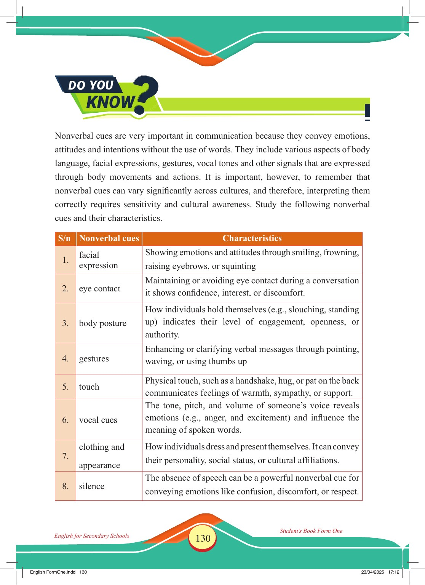

Accessible text transcript - page 130
Use the reader's read-aloud controls or select an individual segment below.
Printed book page 130. DO YOU KNOW? Nonverbal cues are very important in communication because they convey emotions, attitudes and intentions without the use of words. They include various aspects of body language, facial expressions, gestures, vocal tones and other signals that are expressed through body movements and actions. It is important, however, to remember that nonverbal cues can vary significantly across cultures, and therefore, interpreting them correctly requires sensitivity and cultural awareness. Study the following nonverbal cues and their characteristics. 1. facial expression Characteristics Showing emotions and attitudes through smiling, frowning, raising eyebrows, or squinting 2. eye contact Maintaining or avoiding eye contact during a conversation it shows confidence, interest, or discomfort. 3. body posture How individuals hold themselves (e.g., slouching, standing up) indicates their level of engagement, openness, or authority. 4. gestures Enhancing or clarifying verbal messages through pointing, waving, or using thumbs up 5. touch Physical touch, such as a handshake, hug, or pat on the back communicates feelings of warmth, sympathy, or support. 6. vocal cues The tone, pitch, and volume of someone’s voice reveals emotions (e.g., anger, and excitement) and influence the meaning of spoken words. 7. clothing and appearance How individuals dress and present themselves. It can convey their personality, social status, or cultural affiliations. 8. silence The absence of speech can be a powerful nonverbal cue for conveying emotions like confusion, discomfort, or respect. S/n Nonverbal cues Characteristics Table of nonverbal cues and their characteristics: 1. facial expression—showing emotions and attitudes through smiling, frowning, raising eyebrows, or squinting; 2. eye contact—maintaining or avoiding eye contact during a conversation shows confidence, interest, or discomfort; 3. body posture—how individuals hold themselves, such as slouching or standing up, indicates engagement, openness, or authority; 4. gestures—enhancing or clarifying verbal messages through pointing, waving, or using thumbs up; 5. touch—physical touch such as a handshake, hug, or pat on the back communicates warmth, sympathy, or support; 6. vocal cues—the tone, pitch, and volume of someone’s voice reveal emotions and influence the meaning of spoken words; 7. clothing and appearance—how individuals dress and present themselves can convey personality, social status, or cultural affiliations; 8. silence—the absence of speech can convey emotions such as confusion, discomfort, or respect. S/n Nonverbal cues Return to the page image